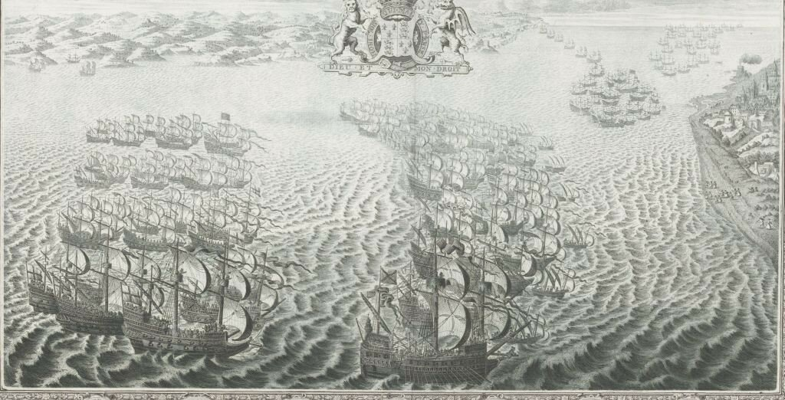
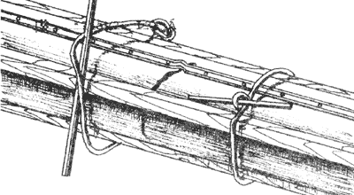
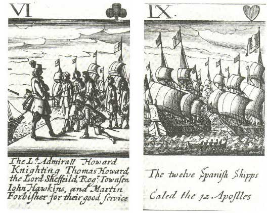

Дневник солдата: 5 августа
А для нас
юбилей ―
ремонт в пути,
постоял ―
и дальше гуди.
В. В. Маяковский. Не юбилейте!

Репродукция из альбома The Tapestry Hangings of the House of Lords: representing the several engagements between the English and Spanish Fleets in the ever memorable year MDLXXXIII, 1739, Rijksmuseum
Продолжим чтение Дневника солдата.
В пятницу, 5 августа, праздник Девы Марии Снежной (N[uest]ra S[eñor]a de las Niebes), ввиду тихой погоды противник не мог подойти к нам ближе, чем на одну лигу. Поэтому в этот день мы получили возможность изготовить шкали (ximielgas) для фок-мачты, которая, как упоминалось ранее, была насквозь пробита ядром; с этой целью была опущена и фор-стеньга, которая находилась в шатком состоянии. Мы работали всю ночь, вне видимости со стороны противника, чтобы тот не догадался о повреждении, которое получила мачта. До рассвета мы изготовили семь шкалей с тремя бугелями (arretaduras) для их крепления. Мы просмолили их, чтобы следов ремонта не было видно.
Примечание 14. В данном отрывке из записок Рекальде содержится уникальная информация о ремонте корабля во время боевых действий и необходимой маскировке этих действий, чтобы ввести противника в заблуждение об истинном техническом состоянии своего корабля. Чувствуется большой опыт Рекальде в морской практике.
Уточним некоторые термины, использованные в переводе текста на русский язык.
Шкáли – «накладные брусья на мачты и реи для скрепы.» (В.И.Даль) В Дневнике солдата используется астурийский термин ximielgas,
Pieza [de madera que se pon na verga d’una embarcación onde s’axunta col palu pa protexela]. (Diccionariu de la Llingua Asturiana)
в английских текстах он переводится как ‘fishes’.
В испанских словарях имеется термин jimielga: la jimielga es un refuerzo de madera, en forma de teja, que se da a los palos, vergas, etc.

Ремонт сломанного рангоутного дерева с помощью шкалей.
Единственное число и.п. русского термина – шкало. Пришел он к нам из голландского (sсhааl, мн. sсhааlеn). Адмирал К.И.Самойлов в Морском словаре определяет этот термин следующим образом: «ШКАЛО — доска (реек, горбыль), накладываемая на сломанное рангоутное дерево для его скрепления, которая затем стягивается с ним бугелями или найтовами.»
Термина arretaduras в испанских словарях нет. Скорее всего он имеет португальское происхождение. Переводить его следует скорее как бугель, чем как найтов.
Примечание 15. На английской стороне день 5 августа был посвящен торжествам по случаю недопущения высадки испанцев на берега южной Англии. Лорд-адмирал Чарльз Говард в связи с этим посвятил в рыцари командующих эскадрами Хокинса и Фробишера и нескольких капитанов, проявивших себя в боевых действиях последних дней. Церемония прошла на борту Ark Royal.

Говард посвящает в рыцари Хокинса и Фробишера. Из набора игральных карт с изображением сюжетов Армады. Английская школа. Конец 17 в.
Но за всеми этими торжествами англичане не забывали о том, что перед ними еще очень сильный противник. За все время боевых действий не удалось существенно ослабить Армаду, личный состав и капитаны кораблей продолжали соблюдать строжайшую дисциплину, боевой ордер оставался безупречным, испанские корабли использовали любую возможность для сокращения дистанции с противником и перехода к абордажным схваткам. Единственное, что продолжало тревожить испанского командующего – это отсутствие надежного места для якорной стоянки в ожидании ответа от герцога Пармы. Беспокоило также сокращение боеприпасов на борту кораблей Армады. Если запасы пороха были еще достаточно велики (порох в Лиссабоне брали с расчетом как на огонь морской артиллерии, так и для действия на суше), то с ядрами было очень плохо. Если англичане, которые тоже испытывали нехватку ядер, могли пополнить их запас в любом порту, то источником пополнения боеприпасов у испанцев была только армия герцога Пармы. И Медина-Сидония пишет срочное послание герцогу, просит его подготовить ядра, так много, как возможно, всех калибров, но особенно 10-, 8- и 6-фунтовых. Кроме того, командующий проводит инвентаризацию боеприпасов на всех кораблях Армады и дает указание перераспределить их в пользу наиболее мощных галеонов.
Продолжение последует.